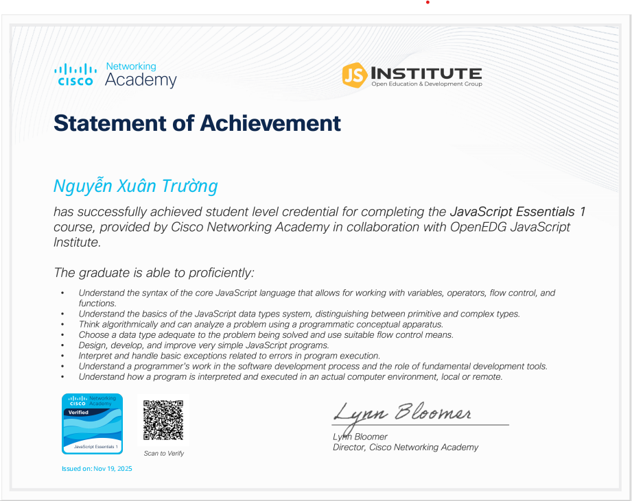
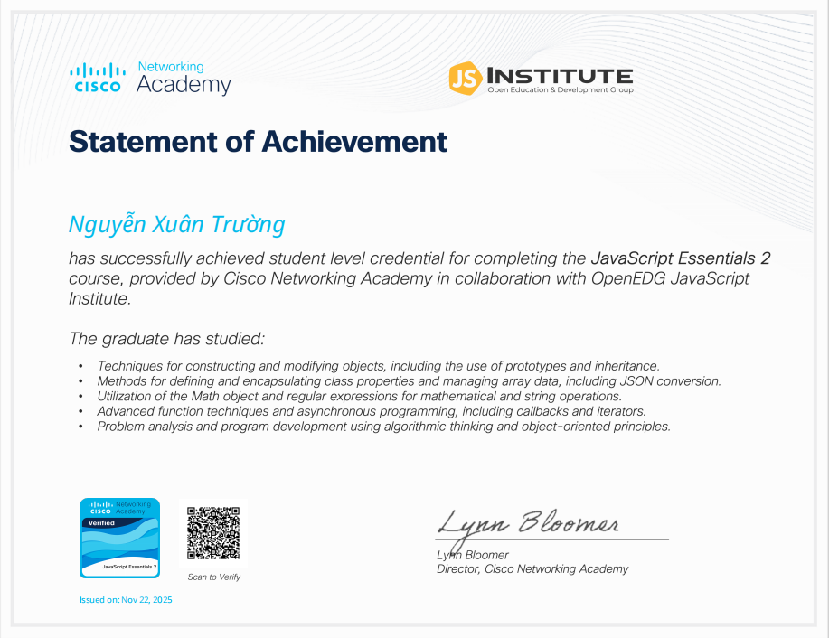
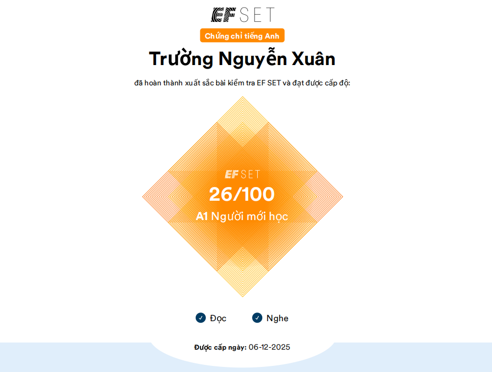

Nguyễn Xuân Trường
Developer | Writer | Learner
Chào mừng bạn đến với không gian cá nhân của tôi. Nơi tôi chia sẻ hành trình, kiến thức và đam mê về công nghệ, lập trình và cuộc sống.
Curriculum Vitae
Thông Tin Cá Nhân
Họ Tên: Nguyễn Xuân Trường
Email: nguyentruong3012k3@gmail.com
Điện Thoại: 0326530224
Địa Chỉ: Trảng Bom, Đồng Nai, Việt Nam
Học Vấn
Trường Đại học Công nghệ TP.HCM (HUTECH)
2021 - 2025
Chuyên ngành: An toàn Thông tin
Chứng Chỉ
Networking Basics Update
16/11/2025
Nơi cấp: Cisco Networking Academy
Mô tả: Nắm vững nền tảng về giao thức mạng, mô hình OSI và thiết bị mạng cơ bản.

JavaScript Essentials 1
2025
Nơi cấp: Cisco Networking Academy
Mô tả: Thành thạo cú pháp cơ bản, kiểu dữ liệu, vòng lặp và xử lý hàm trong JS.
JavaScript Essentials 2
2025
Nơi cấp: Cisco Networking Academy
Mô tả: Vận dụng lập trình hướng đối tượng, xử lý bất đồng bộ và thao tác với DOM.
EF SET Certificate
06/12/2025
Nơi cấp: EF Standard English Test
Mô tả: Chứng nhận trình độ tiếng Anh nền tảng (A1).
Kỹ Năng
JavaScript
Node.js
HTML/CSS
C#
Git
SQL
Dự Án Nổi Bật
Hệ thống Quản lý Quán Net
Xây dựng hệ thống quản lý toàn diện: tính giờ, quản lý kho và bảo mật dữ liệu khách hàng.
Task Management App
Ứng dụng quản lý công việc real-time sử dụng React và Firebase.
Bài Viết Của Tôi
🛡️ An Toàn Thông Tin: Một Sứ Mệnh
20/12/2025
Đây không chỉ là một ngành học, mà là một cuộc chiến cân não...
🌐 Vì Sao Ưu Tiên Học Tiếng Anh
20/11/2025
Quyết định chiến lược mang lại lợi thế cạnh tranh vượt trội...
🌱 Tôi Đã Từng Muốn Bỏ Cuộc
15/11/2025
Hành trình vượt qua hoang mang nhờ điểm tựa gia đình...
💡 Học Được Từ Lập Trình
19/11/2025
Về tư duy logic, sự kiên nhẫn và cách giải quyết vấn đề...
🛠️ Bài Học Từ Dự Án Quán Net
20/12/2025
Những bài học "xương máu" về xây dựng hệ thống và bảo mật...
🎓 Review Lấy Chứng Chỉ Cisco
21/12/2025
Bước đệm quan trọng cho ngành Mạng và Bảo mật...
🔍 Top 5 Công Cụ Bảo Mật
22/12/2025
Làm quen với Nmap, Wireshark, Burp Suite và các vũ khí ATTT...
💻 Tại Sao Tự Code Blog?
23/12/2025
Rèn luyện tư duy Front-end và quản lý mã nguồn qua Git...